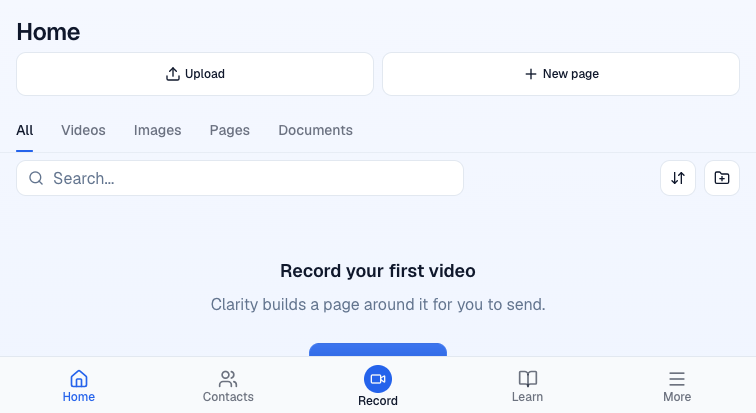
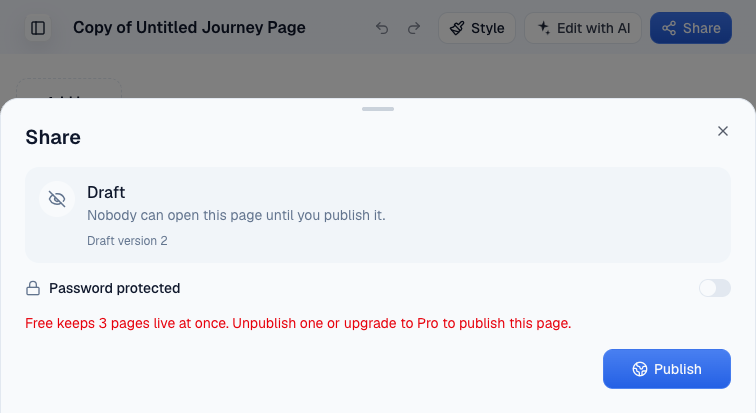
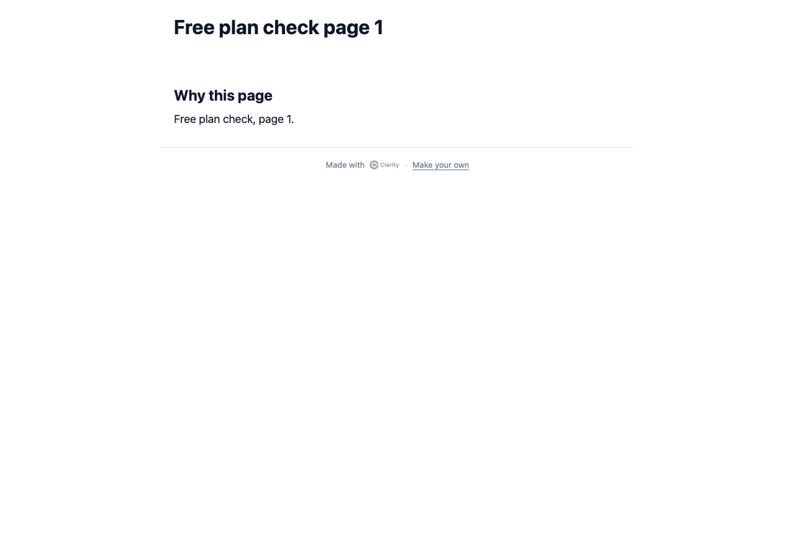
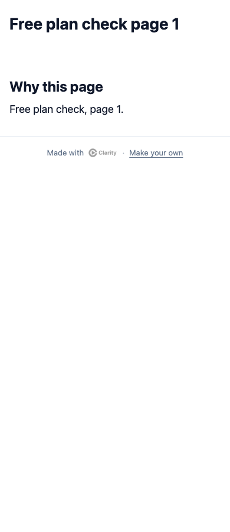
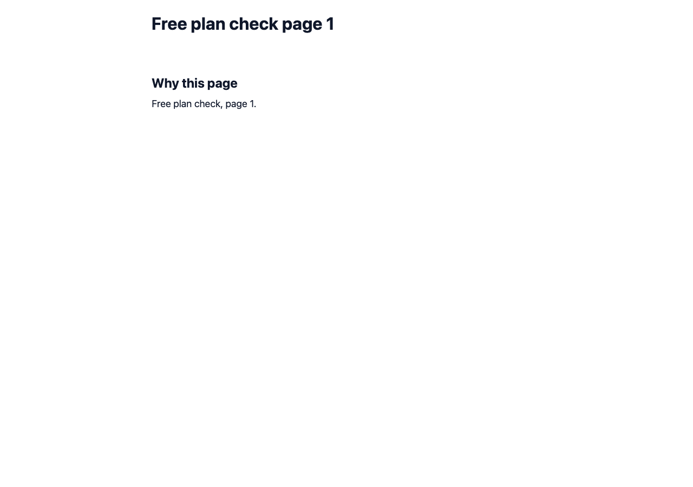
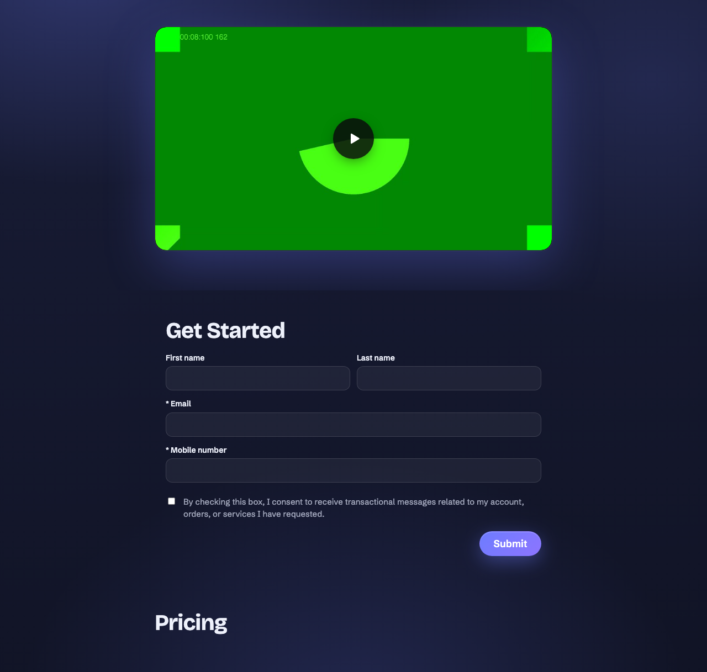
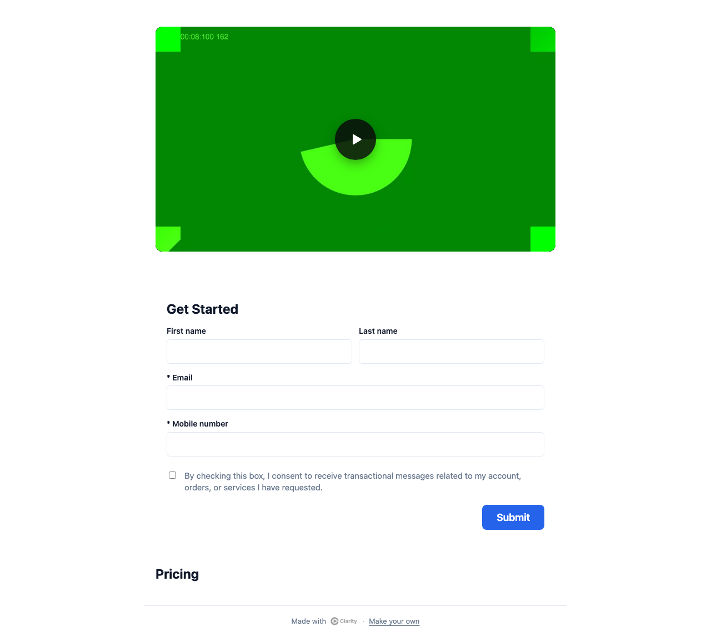
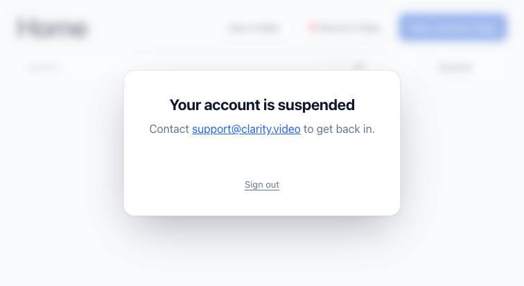

Preview pr-1473.clarity-video.workers.dev at aea0281bc, 14 Oct 2026. The e2e test accounts were moved between Pro, Free and Suspended by changing their grants in the preview's own database, then restored.
/api/trial-offer: plan: free, lapse: access_ended, livePages 0 of 3.

Pages 1 to 3 published with 200. Page 4 got 409 live_page_limit, and the trial-access read then reported 3 of 3. The full limit dialog is #1434; this is today's Share dialog band.






Reads and writes answer 403 account-suspended.
